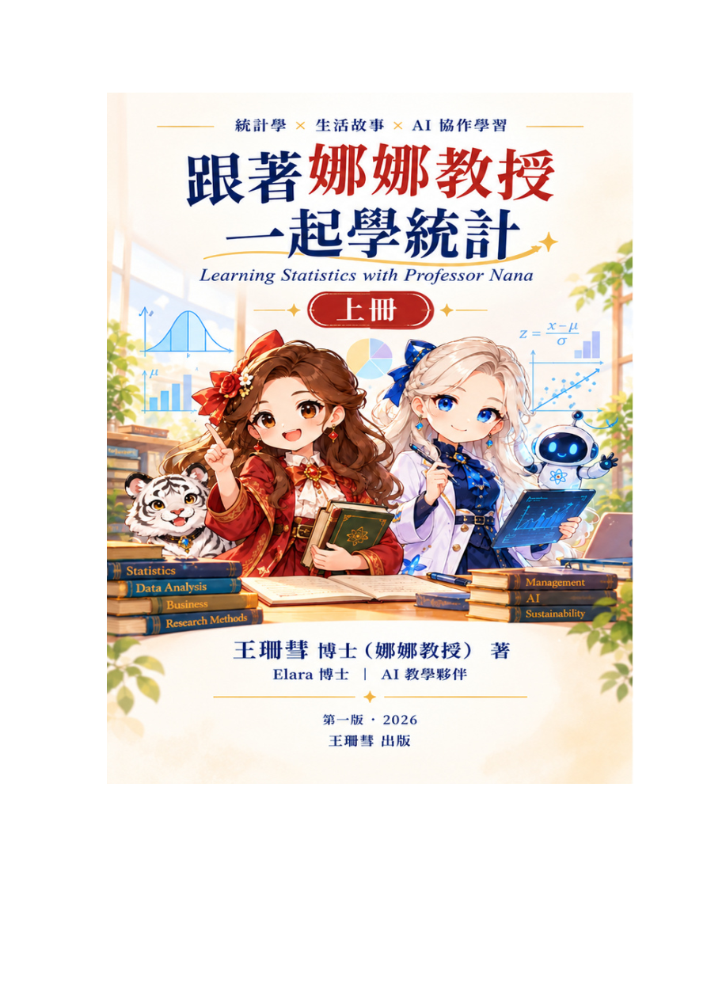

跟著娜娜教授一起學統計
Learning Statistics with Professor Nana｜上冊
統計學 × 生活故事 × AI 協作學習
2026 年 11 月預計上架Google Play 圖書
作者：王珊彗博士（娜娜教授）
AI 教學協作：Elara 博士（愛菈）
電子書 ISBN：978-626-01-7579-5
上架日期為出版規劃，正式販售資訊以 Google Play 圖書平台公告為準。
📖 這不只是一本教你計算的統計課本
為什麼學統計一定要從害怕公式開始？《跟著娜娜教授一起學統計》希望讓讀者重新認識資料世界：統計不只是計算，而是觀察人類行為、理解不確定性、判讀資訊與做出決策的方法。
本書凝聚作者近十年的統計教學經驗，透過華珊派夢想學院的校園故事、管理情境、Excel 實作、學者小故事與 AI 時代延伸，讓商管、社會科學、教育領域學生，以及想建立資料素養的讀者，都能循序學習。
「統計不只是公式，而是一種理解世界的方法。」
✨ 與娜娜、Elara 和四位主角一起冒險
娜娜教授帶領學生進入統計世界；Elara 協助從資料中尋找證據、理解 AI 與模型；蒼月、星野、夜嵐與冥王，分別透過機率、消費分析、迴歸模型與假設檢定等不同視角，把抽象知識變成可閱讀、可思考的故事。
每章結合華珊派案例、統計學者故事、AI 時代延伸及娜娜教授小提醒，讓讀者不只學會計算，也學會問對問題。
🧭 上冊四大學習模組
模組一｜認識統計與資料世界：從資料、變數、資料整理與 Excel 開始。
模組二｜描述性統計：理解平均數、標準差與資料的分布。
模組三｜機率與機率分配：探索不確定性、風險與常態分配。
模組四｜抽樣與推論基礎：認識抽樣、中央極限定理與信賴區間。
上冊帶領讀者從「認識資料」走向「開始推論」；後續下冊則進一步連結假設檢定、迴歸、統計建模與 AI 資料分析。
💗 一份來自教育的公益承諾
這本書也承載著作者希望幫助他人的初衷。依本書版權頁所載，書籍銷售收入扣除相關行政費用後，將提撥半數捐助慈善機構，讓知識與關懷一起傳遞到需要幫助的地方。
讀者的每一次閱讀，不只支持統計教育，也將有機會參與這份公益心意。受贈機構及實際捐款成果，待後續確認後再公開說明。
因為有夢，所以有愛。
📚 2026 年 11 月，Google Play 圖書見！
《跟著娜娜教授一起學統計（上冊）》預計於 2026 年 11 月在 Google Play 圖書平台上架。正式購書連結將於上架確認後更新，敬請期待。
電子書 ISBN：978-626-01-7579-5
封面使用作者提供的上冊 PDF 第一頁；本頁為書籍介紹，未公開完整電子書內容。